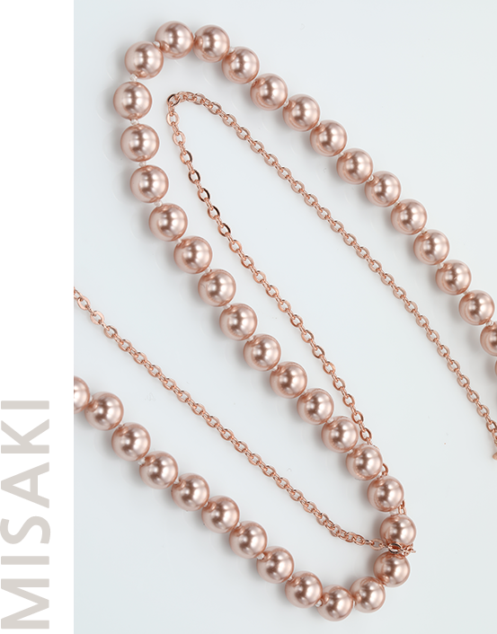
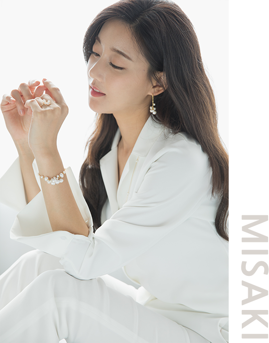
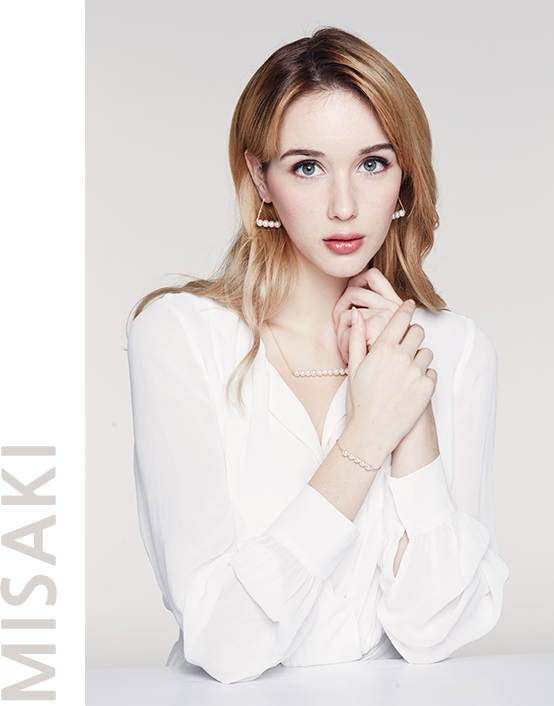
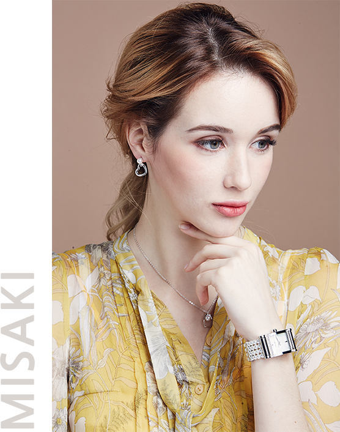
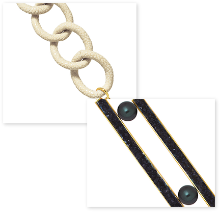
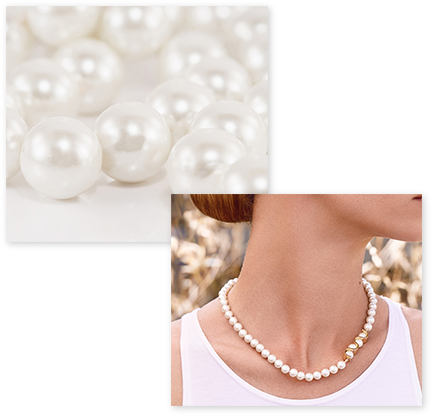

#MISAKI STORY

MISAKI STORY의 시작은 파리의 포토그래퍼,
일본의 일러스트레이터 사이의 러브스토리에서 시작됩니다.
미래에 그의 아내가 될 여인에게 완전히 매료된 그는 프랑스를 떠나
일본에 도착하게 됩니다. 그는 그곳에서의 삶과 문화에 반하여
엄청난 영감을 얻게 됩니다.
그는 그의 뮤즈에게 아름다운 꽃, 일본어로 Misaki 로 명명한
아코야 진주 목걸이를 선물합니다. 일본 해안을 따라 배양된
이 아름다운 진주의 순수성에 매료된 그는 진주 쥬얼리 상품으로
브랜드 런칭을 떠올리게 됩니다.
1987년, 그들은 Misaki의 스토리를 함께 써나가기 시작합니다.
수 년이 흐르면서, Misaki 는 독창적인 디자인을 바탕으로
PEARL JEWELLERY 뿐만 아니라 현대적인 JEWELLERY BRAND로서
발전하였습니다. 창립 후 20년이 지난 오늘날에는 항공사,
면세점 뿐만 아니라 세계적인 브랜드로서 인정받고 있습니다.
#COLLECTION
ALMERIA +
우아하고 현대적이며, 섬세한 디테일과 절묘한 마감이
미묘하게 상반되는 조화를 이루도록 디자인한 컬렉션


CHEEK TO CHEEK +
댄스와 뮤지컬, 재즈에 영감을 받아 탄생하였으며,
생생하고 짜릿한 감각적인 디자인의 컬렉션
TIMELESS +
깔끔한 라인과 다양한 하이앤드 소재들을 결합하여
모던하고 창의적으로 재해석한 디자인

COLLECTOR +
부드럽게 진주를 감싸며, 우아하고
시간이 흘러도 변함없이 아름다운 디자인
#PEARLS & MATERIALS

Materials
Misaki 컬렉션은 전반적으로 진주와 다양한 소재를 시크하고 창조적인 방식으로
결합하여 탄생하였습니다.
판타지컬한 메탈소재, 미네랄 또는 핸드메이드 소재를 이용하여
새로운 형태와 조합의 진주 쥬얼리를 탐구하여 독창성과 다양성에 기여하는 패턴과
자국을 오버레이합니다.
쥬얼리 라인에서 Misaki는 고급스러운 소재들과 진주를 결합시켜
디자인하며, 육체와 관능적인 밍크의 폼은 우아하고 시크한 디자인을 제안합니다.
드루즈 광석과 가공되지 않은 마노 크리스탈의 조합은 원초적이고 고급스러운 광채를
선보이며, 다양한 옥수 석영 물질로 탄생한 쥬얼리는 매우 다양한 컬러 스펙트럼을 제공합니다.
Seawater pearls
전 세계적으로 독보적인 퀄리티를 인정받고 있는 Akoya 진주는 가장 유명한 진주 중에
하나이며,하이앤드 쥬얼리를 제작하는데 사용되어
전 세계의 쥬얼리 제작자들이
가장 많이 찾는 진주중에 하나입니다.
일본과 중국 해안에서 생산되며, 소량으로는
베트남 또는 태국의 해안에서도 만들어지는 Akoya 진주는 둥근 표면과 미니멀한 사이즈,
그리고 부드러운 중성적인 색조로, 밝고 깊은 광채를 자랑합니다.
자연스러운 화이트 색상의 진주는
배양된 뒤 보는 각도에 따라 그레이, 크림 또는 샴페인 틴트, 블랙 색상으로 보이도록 색이 입혀집니다.


Freshwater pearls
하나에서 두 개 이상의 진주가 배양되지 않는 Akoya 진주와는 반대로 담수 진주는
중국, 일본, 북미의 호수 또는 강과 같은 담수에서 진주 자개 조개로부터 배양되어,
믿을 수 없을 만큼 다양한 색상과 모양을 제공합니다.
최대 50개의 진주를 생산할 수
있을 뿐 아니라 진주 모서리의 견고함과 모양(타원형, 눈물방울 또는 바로크 식) 및
색상(진드기, 바다색, 밤색)의 다양성으로 다른 진주와 구별됩니다.
쥬얼리 제작자는
30~50가지 종류의 천연 석영 물질을 조합하여 조개의 살에 넣습니다. 이는 수년에 걸쳐
겹겹의 층을 가지고 있는 진주로 탄생되며, 평균적으로 12가지의 진주가 생성됩니다.